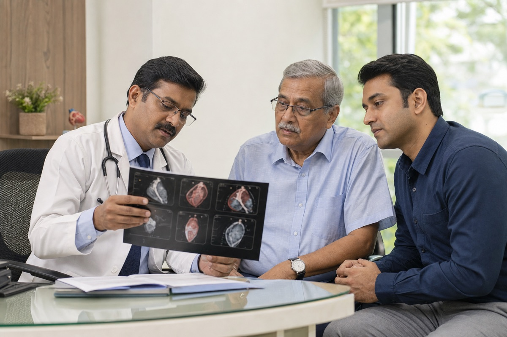
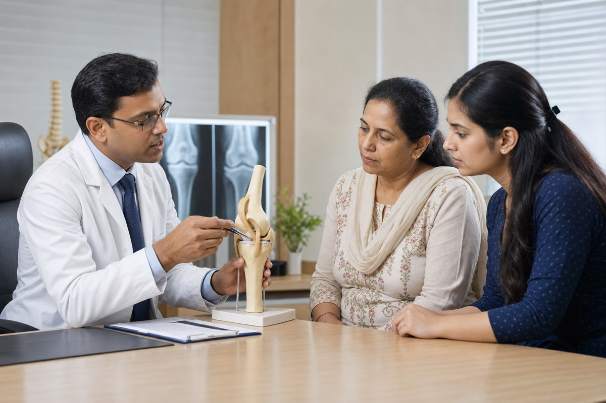
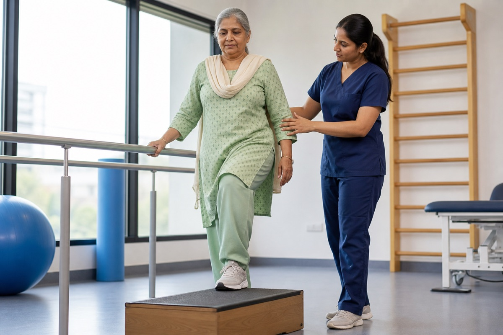
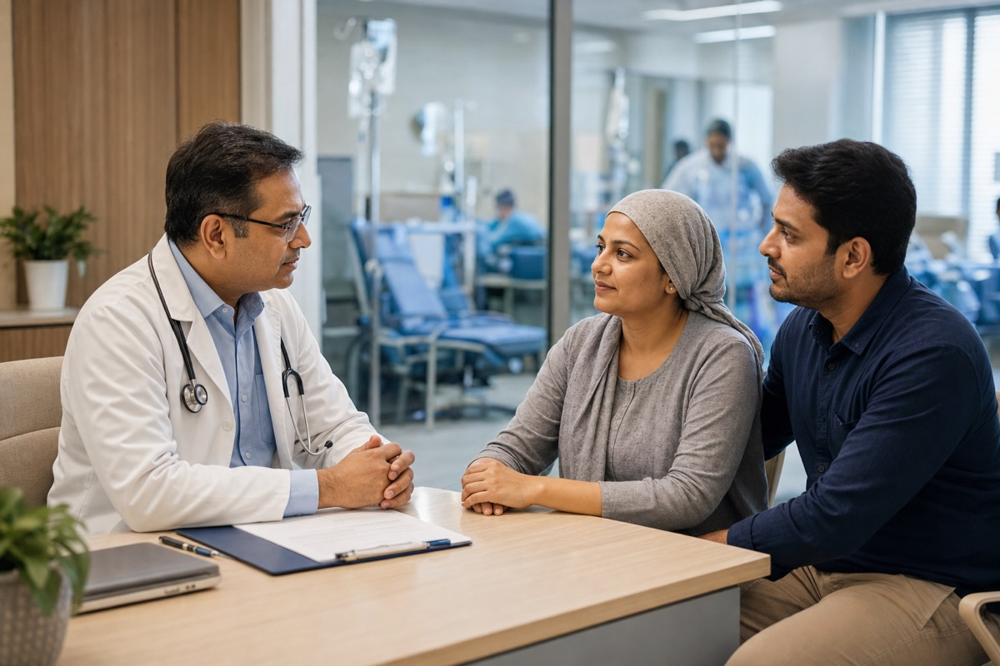
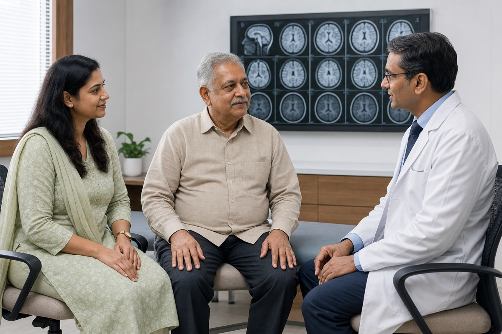
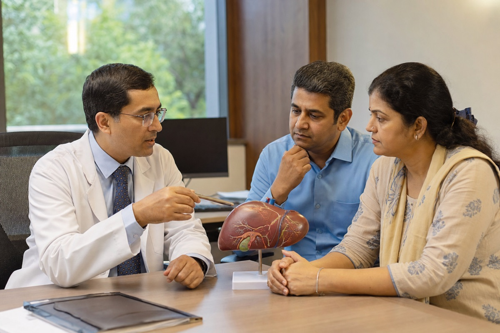
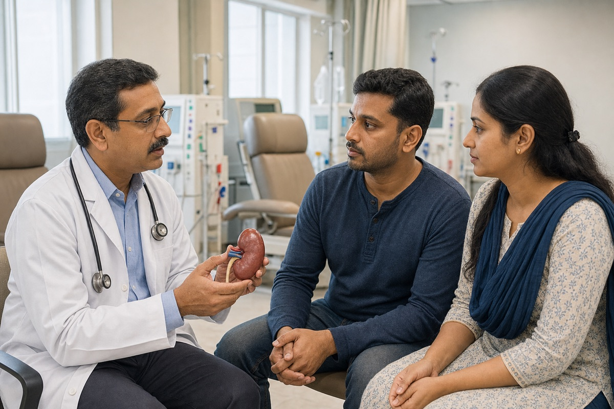
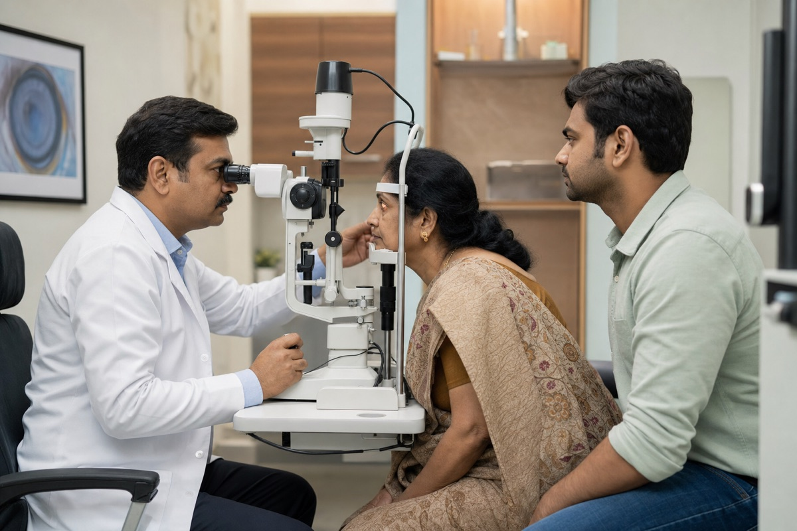
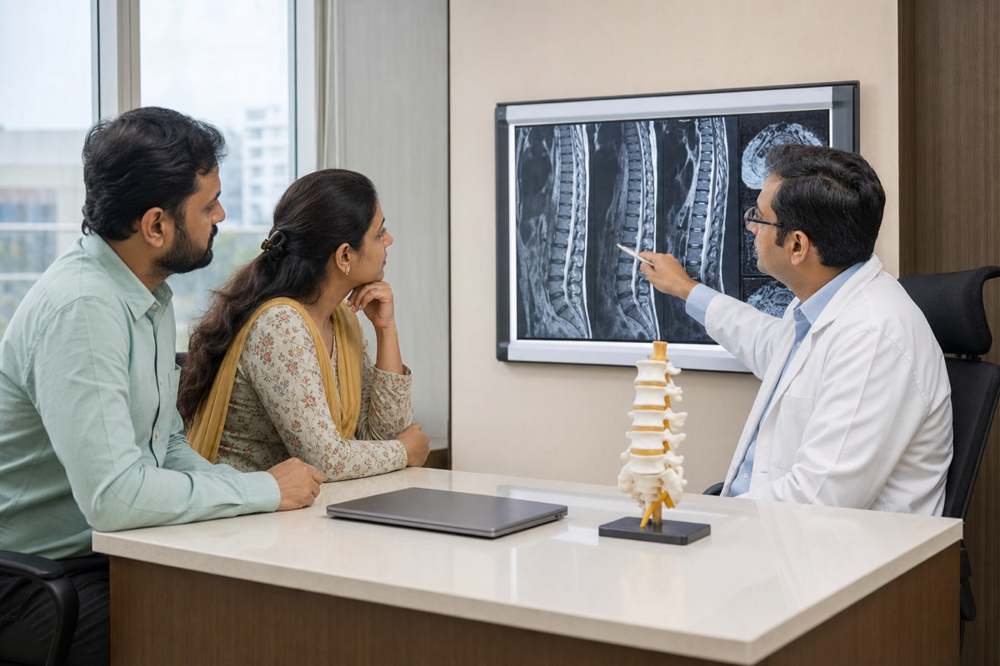

Heart careCardiology
Heart evaluation, second opinions and cardiology coordination.
Explore heart treatment in IndiaWe assist international patients in exploring major specialties and complex procedures through responsible hospital coordination.
Start with our guide to medical treatment in India for international patients, or compare dedicated support for heart surgery in India.

Heart careHeart evaluation, second opinions and cardiology coordination.
Explore heart treatment in India
Mobility careEvaluation and hospital options for knee replacement.
Explore knee replacement in India
Hip careSpecialist review for hip replacement and recovery planning.
Explore hip replacement in India
Oncology
Neurology
Transplant
Kidney careHospital-led review for transplant and kidney care.
Explore kidney transplant in IndiaSpecialist coordination for hematology cases.
Explore oncology treatment in IndiaDental implants, smile correction and oral surgery.
Explore treatment planning in India
Eye care
Spine care